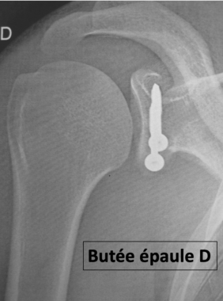
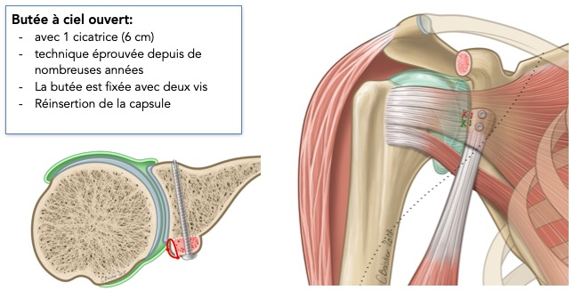

L'instabilité de l'épaule
L’articulation de l’épaule est la plus mobile de tout le corps humain et permet des mouvements très amples. Elle est aussi la plus instable, c’est à dire qu’elle peut «se déboiter». L’instabilité, dans sa forme la plus spectaculaire, se traduit par une LUXATION, c’est à dire que les deux parties de l’articulation ne sont plus en contact l’une avec l’autre. Cette situation nécessite le plus souvent le passage dans un service d’urgence pour qu’un médecin, par manœuvre douce, réduise la luxation. Parfois la luxation n’est pas complète et peut se réduire d’elle même, dans l’instant ou après quelques minutes, c’est ce qu’on appelle une SUBLUXATION.
Opération de la coiffe des rotateurs :
Avant l’opération :
L’articulation de l’épaule est l’articulation la plus mobile du corps humain grâce à un faible emboîtement de ses deux pièces articulaires, la tête de l’humérus qui a une forme de tiers de sphère (balle de tennis) et la glène de l’omoplate qui est petite et plate (pièce de deux euros). La contrepartie en est une instabilité potentielle importante.
- La luxation d’épaule est fréquente, elle correspond à une perte de contact entre la tête de l’humérus et la glène de l’omoplate (= « déboîtement »). Elle est presque toujours d’origine traumatique et de déplacement antérieur (la tête de l’humérus passe en avant).
- La pratique sportive est souvent à l’origine des épisodes de luxations. Tous les sports sont concernés mais les sports avec « armé du bras contré » tels le handball ou le volleyball et les sports de contact tels le rugby, le football ou le judo sont à l’origine de nombreux accidents.
- Les épisodes de luxation créent des lésions des ligaments, qui assurent la stabilité articulaire, le plus souvent au niveau de leur insertion sur la glène (Lésion de Bankart) et des lésions osseuses lorsque la tête de l’humérus vient s’impacter dans la partie antérieure de la glène
- L’immobilisation après une luxation est systématique, sa durée dépend du nombre de luxations antérieures, elle est au minimum de 4 semaines lors d’un premier épisode. Malgré l’immobilisation, les lésions cicatrisent mal et sont source de récidives d’autant plus fréquentes que le patient est jeune avec une pratique de sports à risque.
- Lorsque la luxation se réduit seule ou n’est pas complète, on parle de subluxation.
- Pour que le chirurgien décide avec son patient d’une stabilisation chirurgicale, il faut à la fois une histoire traumatique documentée de luxations ou subluxations et une appréhension (« peur de se déboîter ») dans la vie quotidienne, professionnelle ou lors d’activités sportives entraînant une gêne.

Pendant l’opération :
Deux grands types de stabilisations chirurgicales existent :
- La butée de Latarjet-Bristow ou butée coracoïdienne qui consiste à déplacer un morceau d’os sur lequel restent insérés des muscles puissants à la partie basse de la face antérieure de la glène. Cela permet de créer un véritable mur en avant de la tête humérale empêchant les luxations.
- L’intervention de Bankart qui consiste à réparer et réinsérer le bourrelet et les ligaments arrachés lors des épisodes de luxation à l’aide d’ancres fichées dans la glène. Cette intervention est actuellement entièrement réalisée sous arthroscopie à l’aide de 2 ou 3 incisions de 1 cm sans aucune section musculaire.


Vidéo : STABILISATION DE L'ÉPAULE PAR BUTÉE CORACOÏDIENNE:
(attention certaines images sont à éviter pour les personnes sensibles)La stabilisation de l’épaule par une butée coracoïdienne (intervention de Latarjet) est proposée en cas de luxations antérieures récidivantes. Elle s’effectue par un abord mini-invasif et permet une reprise des activités sportives au niveau antérieur. Cette intervention permet une stabilisation fiable de l’épaule même quand les luxations ont créé des lésions osseuses engageantes de la tête de l’humérus ou de l’omoplate.
résumé de video
Après l’opération :
- La durée d’hospitalisation est en moyenne de 24 à 48H.
- L’épaule est immobilisée après l’intervention par une attelle maintenant le bras contre le thorax et le coude fléchi. La durée d’immobilisation est de 4 semaines.
- La rééducation de l’épaule est débutée dès le lendemain de l’intervention et se poursuit pendant plusieurs mois selon un protocole précis fonction de l’intervention réalisée.
- La reprise des activités sportives à risque est autorisée entre les 4ème et le 6ème mois postopératoires. Chez les sportifs, elle est précédée d’une rééducation spécifique de préparation physique pour garantir un maximum de sécurité.
Les progrès récents :
- L’analyse des résultats des stabilisations arthroscopiques a permis de mieux préciser et définir les indications de ces réparations. De ce fait, le taux de récidive d’instabilité tend à se rapprocher de celui des stabilisations par butée coracoïdienne (environ 5%).
- Le développement des techniques arthroscopiques permet maintenant d’associer à la réparation du bourrelet glénoïdien le traitement électif de certaines lésions jusqu’alors non prises en charge.